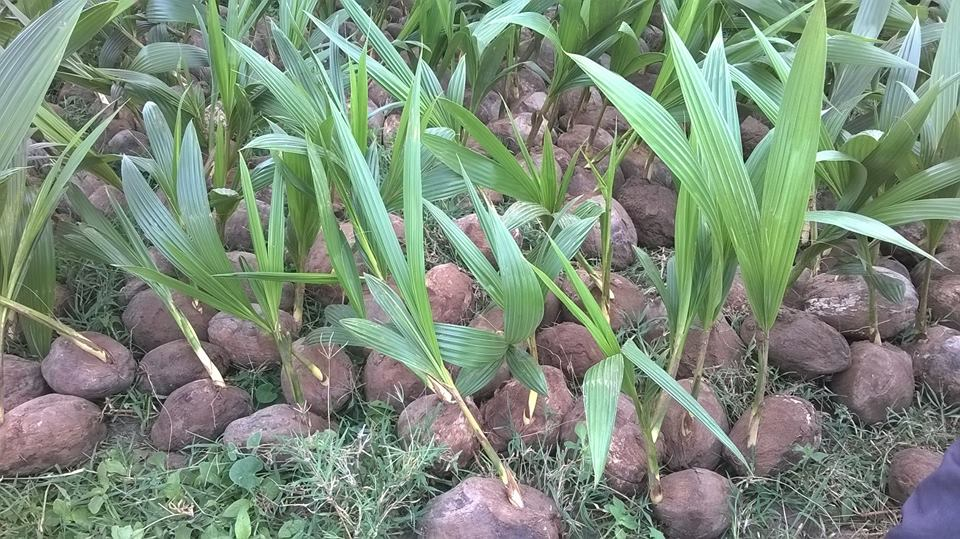
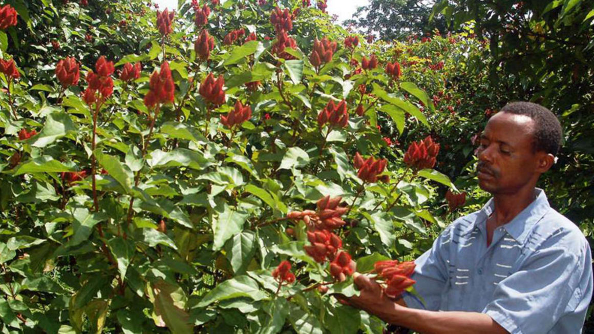

The establishment of Kenya Coconut Development Authority (KCDA) in July 2008 and government’s move to classify the coconut tree as a “special crop” giving it the same status like coffee and tea, is expected to revive the sector.
KCDA has since been transformed to Nuts and Oil Crops Directorate (NOCD) under the agricultural regulator, Agriculture, Fisheries and Food Authority.A survey in Kwale and Msambweni districts, carried out in July, shows that more than half of passion trees under cultivation were planted less than a year ago, implying that new farmers have taken to the trade and established ones are expanding their farms. Passion fruit stems take six years to mature, but with adequate moisture the first crop is harvested within six months.

Locally known as “mrangi”, for its bright red fruits that have numerous seeds,
Bixa is a cash crop introduced into Kenya’s Coast region in the 1970s.
There are two Bixa seasons in a year. The crop does well in the and is mainly
grown in Kwale, Mswambweni, Lamu, Malindi and Kiunga, near the Somalia border.
According to Matuga Kenya Agricultural Research Institute officer, Finyange Pole, Bixa
is crucial for Kwale County, although many people don’t grow the crop.
Youtube
The County Government of Kwale distributed seedlings to farmers in the region. Matuga Farmers Group (MFG) is facilitating local farmers to acquire and plant certified orange seedlings.
The Group facilites local farmers to acquire hybrid coconut seedlings that have better productivity and are resistant to hash climate, pests and diseases. The Group provides seedlings in collaboration with KALRO Matuga Branch and the County Government.
As the County advocates for planting of new cashewnuts varriety, local farmers have been alledged to replace their ageing trees with new, higher-yielding varieties and invest in proper and specialiced agronomy as well as services.
In conjuction with KALRO and the County Government of Kwale, MFG enable local, farmers to acquire and plant tissue culture banana seedlings.
Coast Composite maize seeds produced by KALRO, Duma from Seeds Company and SY594 produced by Syngeta are the best hybrids for the region. Matuga Farmers Group has linked with Pwani Agrovet to provide hybrid seeds to local farmers.